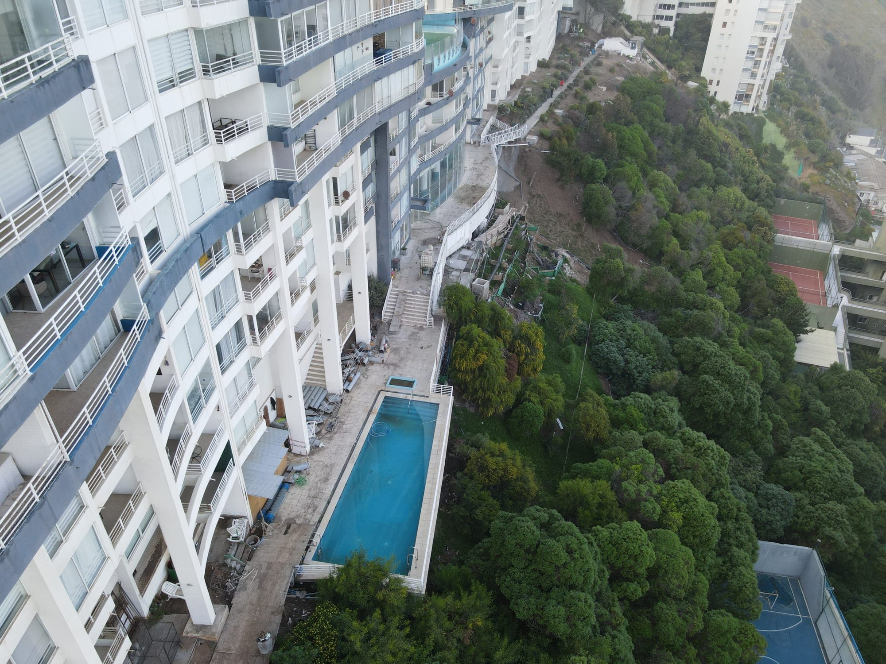

E-01 / SERVIU

Mitigación de socavón y aguas lluvias, Euromarina II
Asesoría e inspección técnica de las obras ejecutadas por SERVIU dentro y en las inmediaciones del edificio Euromarina II. Reportamos avances, identificamos hallazgos y detectamos diferencias entre los antecedentes del proyecto y lo efectivamente construido, considerando los compromisos comunicados a la comunidad.
- Obras de mitigación del socavón Euromarina II
- Proyecto de evacuación de aguas lluvias